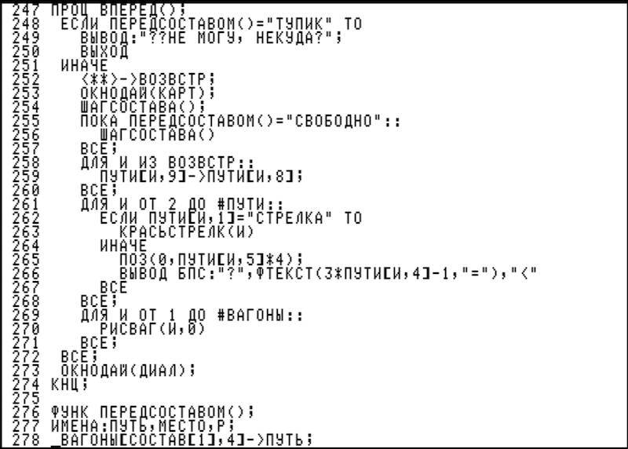

Моя программа
Здесь вы увидте перевод из Килограммов в Граммы , Километры в Метры , и Рубли в Доллары .
Перейти

Главная страница.
Здесь вы увидте перевод из Килограммов в Граммы , Километры в Метры , и Рубли в Доллары .
Перейти